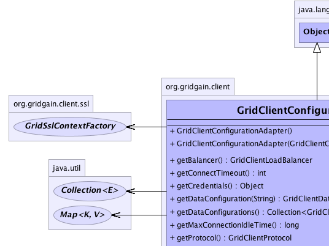
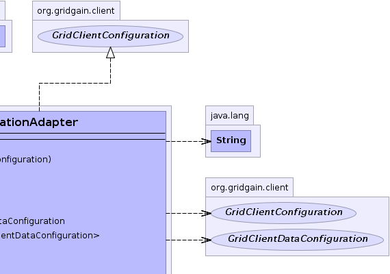
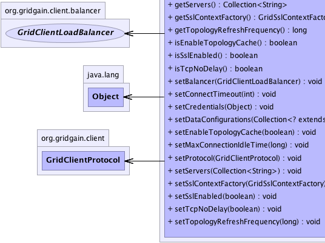
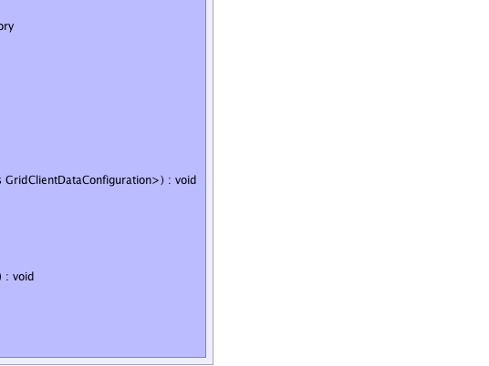

org.gridgain.client.GridClientConfigurationAdapter
org.gridgain.client.GridClientConfigurationAdapter
|
GridGain™ 4.0.1
Java Client |
|||||||||
| PREV CLASS NEXT CLASS | FRAMES NO FRAMES | |||||||||
| SUMMARY: NESTED | FIELD | CONSTR | METHOD | DETAIL: FIELD | CONSTR | METHOD | |||||||||
java.lang.Object
public class GridClientConfigurationAdapter
Client configuration adapter.
| Wiki | |
| Forum |
|  |  |
|  |  |
| Field Summary |
|---|
| Fields inherited from interface org.gridgain.client.GridClientConfiguration |
|---|
DFLT_CLIENT_PROTOCOL, DFLT_MAX_CONN_IDLE_TIME, DFLT_TCP_NODELAY, DFLT_TOP_REFRESH_FREQ |
| Constructor Summary | |
|---|---|
GridClientConfigurationAdapter()
Creates default configuration. |
|
GridClientConfigurationAdapter(GridClientConfiguration cfg)
Copy constructor. |
|
| Method Summary | |
|---|---|
GridClientLoadBalancer |
getBalancer()
Default balancer to be used for computational client. |
int |
getConnectTimeout()
Gets timeout for socket connect operation. |
Object |
getCredentials()
Gets client credentials to authenticate with. |
GridClientDataConfiguration |
getDataConfiguration(String name)
Gets data configuration for a cache with specified name. |
Collection<GridClientDataConfiguration> |
getDataConfigurations()
Gets a collection of data configurations specified by user. |
long |
getMaxConnectionIdleTime()
Gets maximum amount of time that client connection can be idle before it is closed. |
GridClientProtocol |
getProtocol()
Gets protocol for communication between client and remote grid. |
Collection<String> |
getServers()
Collection of 'host:port' pairs representing
remote grid servers used to establish initial connection to
the grid. |
org.gridgain.client.ssl.GridSslContextFactory |
getSslContextFactory()
Gets a factory that should be used for SSL context creation if SSL is enabled. |
long |
getTopologyRefreshFrequency()
Gets topology refresh frequency. |
boolean |
isEnableTopologyCache()
Enables client to cache topology internally, so it does not have to be always refreshed. |
boolean |
isSslEnabled()
Flag indicating whether client should try to connect server with secure socket layer enabled (regardless of protocol used). |
boolean |
isTcpNoDelay()
Gets flag indicating whether TCP_NODELAY flag should be enabled for outgoing connections. |
void |
setBalancer(GridClientLoadBalancer balancer)
Sets default compute balancer. |
void |
setConnectTimeout(int connectTimeout)
Sets timeout for socket connect operation. |
void |
setCredentials(Object cred)
Sets client credentials object used in authentication process. |
void |
setDataConfigurations(Collection<? extends GridClientDataConfiguration> dataCfgs)
Sets data configurations. |
void |
setEnableTopologyCache(boolean enableTopCache)
Sets flag indicating whether topology should be cached by client. |
void |
setMaxConnectionIdleTime(long maxConnIdleTime)
Sets maximum time in milliseconds which connection can be idle before it is closed by client. |
void |
setProtocol(GridClientProtocol proto)
Sets protocol type that should be used in communication. |
void |
setServers(Collection<String> srvs)
Sets list of servers this client should connect to. |
void |
setSslContextFactory(org.gridgain.client.ssl.GridSslContextFactory sslCtxFactory)
Sets SSL context factory that will be used for creation of secure connections. |
void |
setSslEnabled(boolean sslEnabled)
Sets whether ssl should be enabled or not. |
void |
setTcpNoDelay(boolean tcpNoDelay)
Sets whether TCP_NODELAY flag should be set on underlying socket connections. |
void |
setTopologyRefreshFrequency(long topRefreshFreq)
Sets topology refresh frequency. |
| Methods inherited from class java.lang.Object |
|---|
clone, equals, finalize, getClass, hashCode, notify, notifyAll, toString, wait, wait, wait |
| Constructor Detail |
|---|
public GridClientConfigurationAdapter()
public GridClientConfigurationAdapter(GridClientConfiguration cfg)
cfg - Configuration to be copied.| Method Detail |
|---|
public Collection<String> getServers()
'host:port' pairs representing
remote grid servers used to establish initial connection to
the grid. Once connection is established, GridGain will get
a full view on grid topology and will be able to connect to
any available remote node.
getServers in interface GridClientConfiguration'host:port' pairs representing remote
grid servers.public void setServers(Collection<String> srvs)
srvs - List of servers.public GridClientProtocol getProtocol()
getProtocol in interface GridClientConfigurationpublic void setProtocol(GridClientProtocol proto)
proto - Protocol type.GridClientProtocolpublic int getConnectTimeout()
getConnectTimeout in interface GridClientConfigurationpublic boolean isTcpNoDelay()
TCP_NODELAY flag should be enabled for outgoing connections.
This flag reduces communication latency and in the majority of cases should be set to true. For more
information, see Socket.setTcpNoDelay(boolean)
If not set, default value is GridClientConfiguration.DFLT_TCP_NODELAY
isTcpNoDelay in interface GridClientConfigurationTCP_NODELAY should be set on underlying sockets.public void setTcpNoDelay(boolean tcpNoDelay)
TCP_NODELAY flag should be set on underlying socket connections.
tcpNoDelay - True if flag should be set.public void setConnectTimeout(int connectTimeout)
connectTimeout - Connect timeout in milliseconds.public boolean isSslEnabled()
isSslEnabled in interface GridClientConfigurationTrue if SSL should be enabled.public void setSslEnabled(boolean sslEnabled)
true,
an instance of GridSslContextFactory must be provided in configuration.
sslEnabled - True if SSL should be enabled.public org.gridgain.client.ssl.GridSslContextFactory getSslContextFactory()
getSslContextFactory in interface GridClientConfigurationGridSslContextFactory,
GridClientConfiguration.isSslEnabled()public void setSslContextFactory(org.gridgain.client.ssl.GridSslContextFactory sslCtxFactory)
sslCtxFactory - Context factory.public GridClientLoadBalancer getBalancer()
getBalancer in interface GridClientConfigurationpublic void setBalancer(GridClientLoadBalancer balancer)
balancer - Balancer to use.public Object getCredentials()
getCredentials in interface GridClientConfigurationnull)public void setCredentials(Object cred)
cred - Client credentials.public Collection<GridClientDataConfiguration> getDataConfigurations()
getDataConfigurations in interface GridClientConfigurationpublic void setDataConfigurations(Collection<? extends GridClientDataConfiguration> dataCfgs)
dataCfgs - Data configurations.public GridClientDataConfiguration getDataConfiguration(String name)
name - Name of grid cache.
null if there is not configuration for specified name.public boolean isEnableTopologyCache()
GridClientConfiguration.getTopologyRefreshFrequency() interval.
isEnableTopologyCache in interface GridClientConfigurationTrue if topology cache is enabled, false otherwise.public void setEnableTopologyCache(boolean enableTopCache)
enableTopCache - True if cache should be enabled.public long getTopologyRefreshFrequency()
getTopologyRefreshFrequency in interface GridClientConfigurationpublic void setTopologyRefreshFrequency(long topRefreshFreq)
topRefreshFreq milliseconds.
topRefreshFreq - Topology refresh frequency in milliseconds.public long getMaxConnectionIdleTime()
getMaxConnectionIdleTime in interface GridClientConfigurationpublic void setMaxConnectionIdleTime(long maxConnIdleTime)
maxConnIdleTime - Maximum time of connection idleness in milliseconds.
|
GridGain™ 4.0.1
Java Client |
|||||||||
| PREV CLASS NEXT CLASS | FRAMES NO FRAMES | |||||||||
| SUMMARY: NESTED | FIELD | CONSTR | METHOD | DETAIL: FIELD | CONSTR | METHOD | |||||||||
|
GridGain - Real Time Big Data
|
|
|